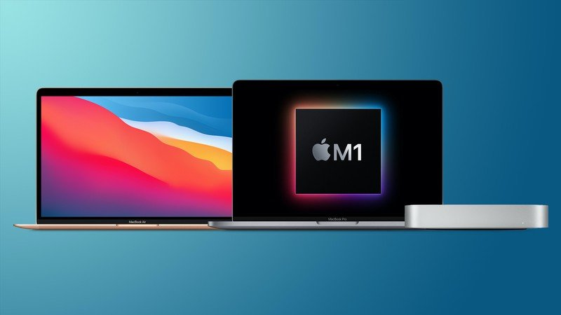

Co je M1 čip?

Tento týden společnost Apple představila nové procesory M1. Jedná se o revoluci v počítačovém průmyslu? V článku se dozvíte, kde se tento čip vzal a jaké přináší novinky. Dále píši o jeho výhodách či nevýhodách oproti konkurenci.
Odkud se čip vzal?
M1 chip je nový čip od společnosti Apple. Vývoj čipu vychází z původních čipů, které Apple používal v ostatních zařízeních. Tento čip by měl nahradit současně používané čipy od společnosti Intel.
Apple si již dlouhou dobu vyrábí procesory pro iPhony a iPady. Tyto procesory jsou založené na technologii ARM. Apple používá ve všech svých zařízeních kromě počítačů vlastní procesory. V blízké budoucnosti chtějí migrovat všechny počítače na svou architekturu.
Ve všech aktuálně prodávaných počítačích používá Apple čipy Intel. Na Intel přešel před několika lety od Power PC. Protože Apple zjistil, že jejich čipy v iPadech jsou velice výkonné a leckdy předčí i Intel, rozhodl se udělat vlastní. Navíc už nemusí do svých produktů promítat marži Intelu.
Výhody M1
Tento procesor je velice efektivní a nabízí vysoký výkon. Díky stejné architektuře mezi jednotlivými produkty bude sdílení aplikací snazší než kdy předtím.
Díky M1 čipu Apple nabízí notebooky s největší výdrží baterie na trhu. Jejich výdrž dosahuje až 2 dnů běžného používání. S procesory od společnosti Intel toho Apple nebyl schopný dosáhnout kvůli jejich poměrně vysoké neefektivitě.
M1 čip je aktuálně nasazen na MacBooku air a pro a Macu mini. V následujícím roce nejspíše uvidíme tento čip i u ostatních počítačů od Applu. Možná se ho dočkáme i v iPadech. Zařízení jako iPhone nebo Apple Watch ho nejspíše nedostanou, ale jejich architektura je stejná. Díky tomu vývojáři mohou publikovat ty samé aplikace na všechny platformy, což nikde jinde není možné.
Nevýhody
Protože každá mince má dvě strany, řekneme si i něco o nevýhodách. Největší z nich je samozřejmě nedostupnost optimalizovaných aplikací. Další může být nutnost použití překladové vrstvy Rosetta 2.
Než bude většina aplikací dostupná nativně na ARMu, tak si budeme muset pár let počkat. Vývojáři, pro které není Mac OS platforma prioritní, možná ani ARM verze aplikací nevydají. Otázkou také zůstávají programy zajišťující virtuální počítače.
Rosetta 2 je emulátor x86 architektury. Díky této vrstvě jsme schopni spouštět na novém čipu i neoptimalizované aplikace. Toto s sebou nese řadu problémů. Většina her nejde spustit. Některé aplikace padají a jiné jsou velmi pomalé.
Závěr
Myslím, že Apple čipy svým výkonem předčí konkurenci. Je jen otázkou času, kdy budou nové aplikace připravené a na staré Intel Macy se přestanou vyvíjet. V současné době bych již do Intel Macu nešel. Pokud s koupí nespěcháte, počkejte pár měsíců a uvidíte, jak se situace vyvine.
Publikováno: 20. 11. 2020 Autor: Jan Novák